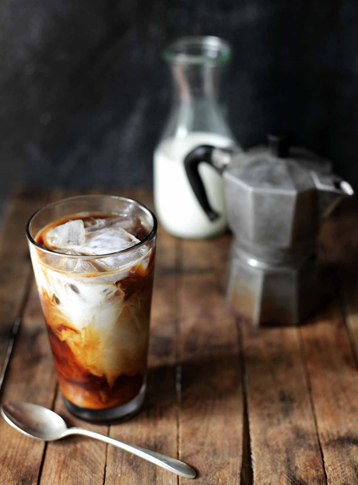
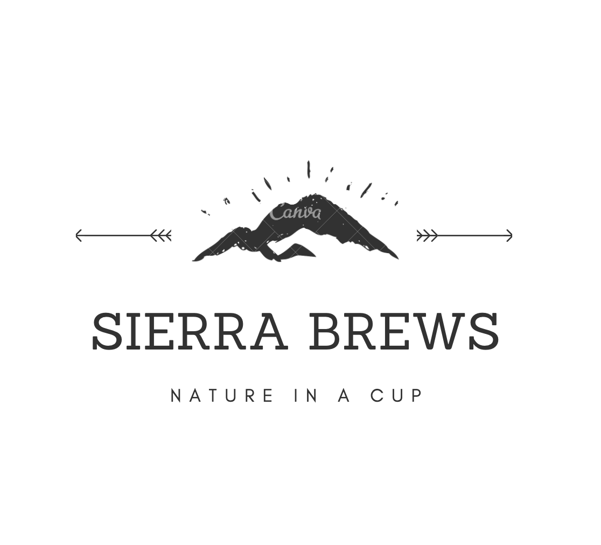
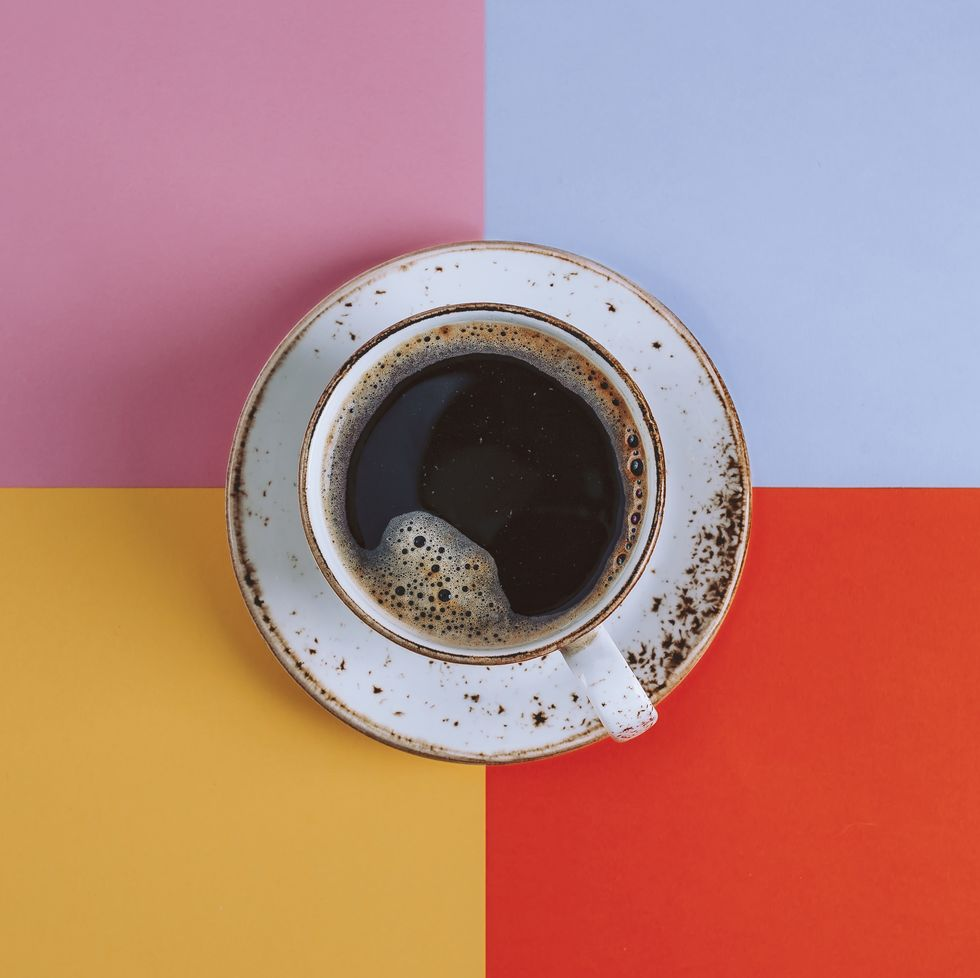
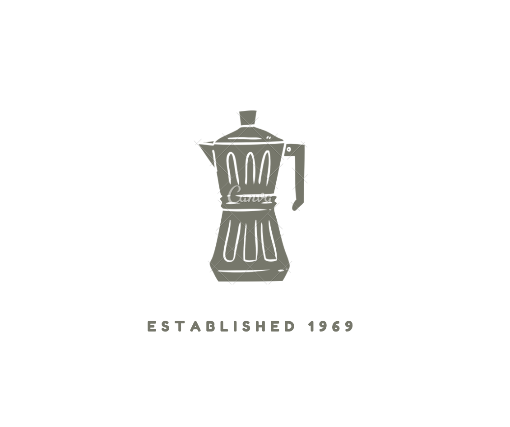

Gear
Beans
Drinks
Welcome Coffee Lovers
   
My name is Ana Maria Orduz.
I was born in Colombia, South America where some of the best coffee is cultivated and exported.
Coffee has been a love of mine since before I could recite the alphabet. (I can thank my grandmother for that)